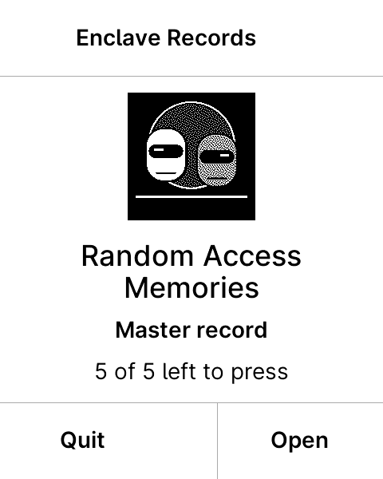
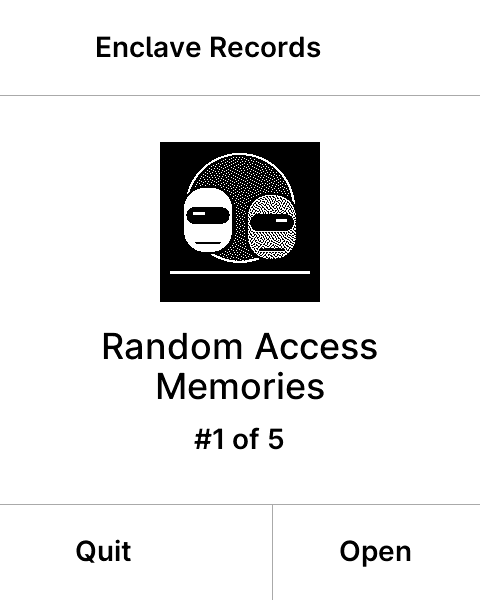
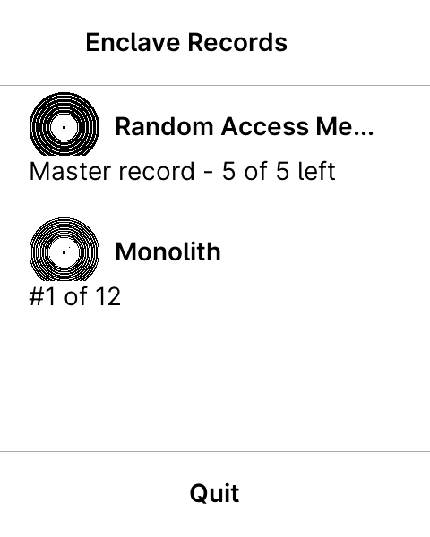
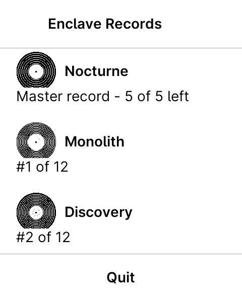
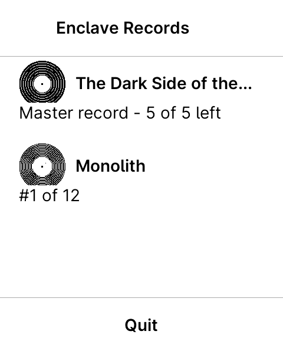
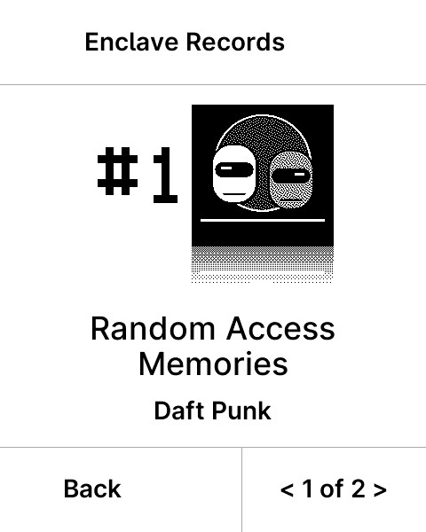
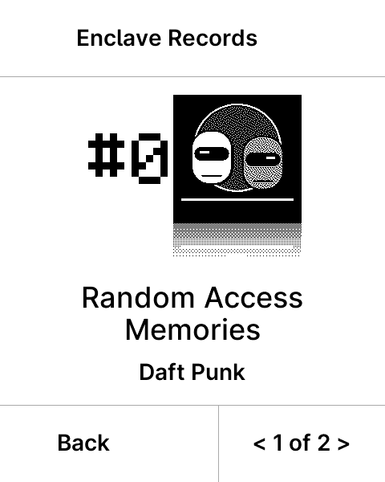
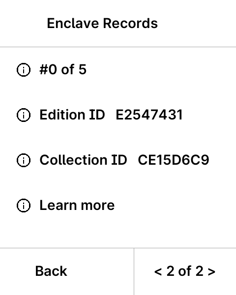
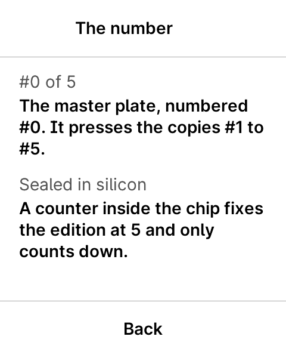
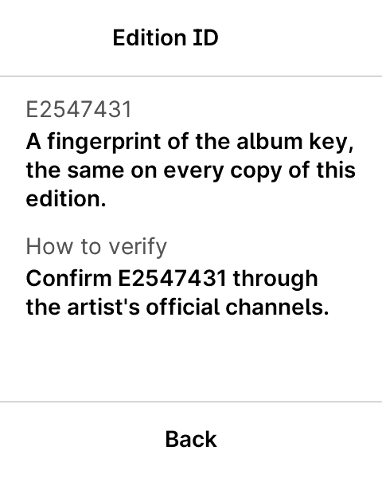

Appliqué: plus de "copy" (le défaut est muet), master = "Master record" + #0, artiste au recto, verso = 4 lignes enveloppe avec (i) chacune, "Learn more" pour les limites, "#N of M" partout, octothorpe réparé, "Quit". Donne tes retours par numéro d'écran.

1. Library — master ("Master record", #0)

2. Library — pressing (aucun label, juste #N of M)

3. Library — 2 albums (séparateur • )

4. Library — 3 albums (liste)

4b. Library — titre long (troncature)

5. Recto — artiste sous le titre

6. Recto master — le gros #0

7. Verso — 4 lignes: numéro · Edition ID · Collection ID · Learn more, chacune avec (i)

8. (i) numéro — "#1 of 5" + compteur scellé dans la puce

9. (i) Edition ID — "confirm through the artist's official channels"